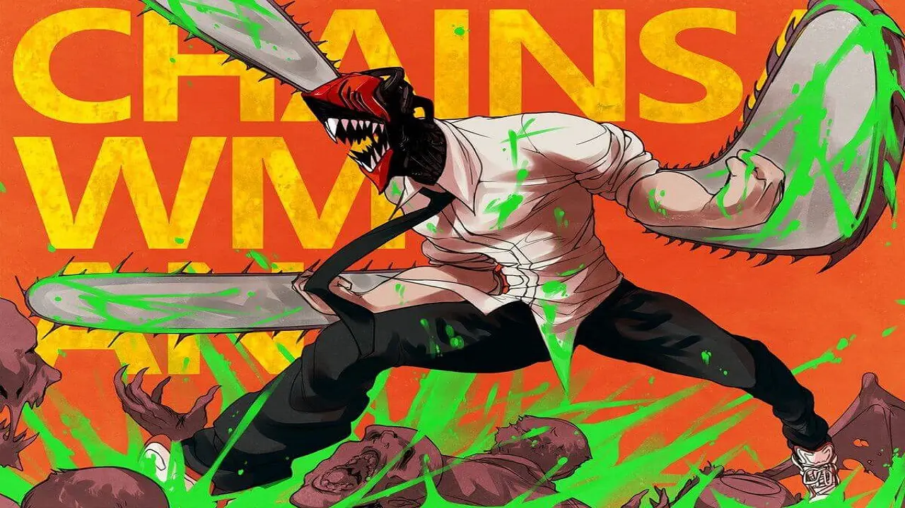
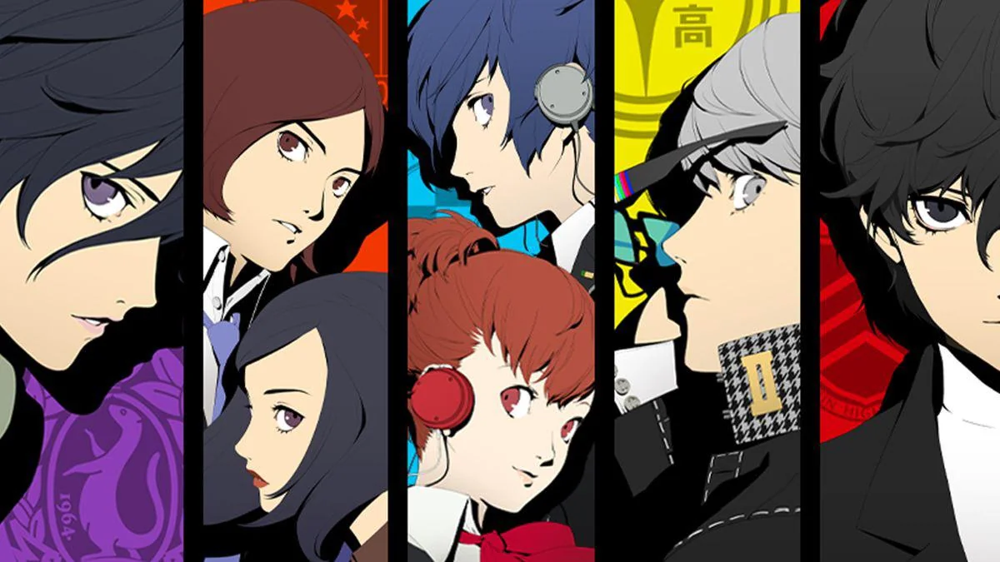
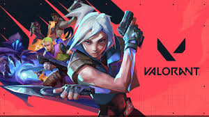

About me
Sono uno studente dell' "I.I.S. Verona Trento di Messina" con una forte passione per i fumetti, i videogiochi e la programmazione.
Fin da piccolo, i fumetti mi hanno affascinato per le loro storie coinvolgenti e i personaggi unici, mentre i videogiochi sono diventati un modo per esplorare mondi straordinari e sfidare me stesso.
Con il tempo, ho scoperto la programmazione, unendo logica e creatività per creare progetti e dare vita alle mie idee.
Mi piace imparare nuove tecnologie, sperimentare e migliorarmi costantemente, con l'obiettivo di trasformare le mie passioni in un futuro professionale.
Tra le mie opere preferite ci sono Chainsaw Man e
Tokyo Revengers e mi piace parecchio giocare alla serie
Persona e allo sparatutto competitivo VALORANT



Le mie competenze
Trovandomi al secondo anno di scuola superiore le mie competenze non sono ancora molto elevate. Con quello che so di HTML, CSS e JavaScript, ho realizzato questo sito completamente da autodidatta. Ho anche realizzato un piccolo programma per la scuola che contiene 3 brevi giochi scritto in C++.